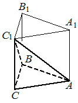

sol50
Предварительные разборы, внешнего эталона нет.
| Найдите объём многогранника, вершинами которого являются вершины , , , правильной треугольной призмы , площадь основания которой равна 6, а боковое ребро равно 9. |  |
{
"complete": true,
"included": true,
"exclusion_reasons": [],
"author_mode": "standalone_initial",
"author_path": "raw\\author\\BE03FA.json",
"auditor_path": "raw\\auditor\\BE03FA.json",
"feedback_ref": null,
"source_run": "data/annotation/runs/2026-11-08-fipi-team-ThreeHundredsperSecond-50"
}{
"task_id": "BE03FA",
"solution_status": "solved",
"answer": "18",
"steps": [
{
"id": "s1",
"action": "Определить вид многогранника и его высоту к основанию ABC.",
"result": "Многогранник ABCC₁ — треугольная пирамида с основанием ABC и вершиной C₁. Правильная призма прямая, поэтому C₁C перпендикулярно плоскости ABC и высота пирамиды равна боковому ребру: h = 9.",
"kc_ids": [
"kc1"
],
"input_refs": [
"condition"
]
},
{
"id": "s2",
"action": "Вычислить объём пирамиды по площади основания и высоте.",
"result": "V = Sосн·h/3 = 6·9/3 = 18.",
"kc_ids": [
"kc2"
],
"input_refs": [
"condition",
"s1"
]
}
],
"kc_candidates": [
{
"id": "kc1",
"name": "Определять высоту пирамиды, образованной основанием и вершиной прямой призмы",
"description": "По выбранным вершинам прямой призмы распознать пирамиду с основанием в плоскости основания призмы; если противоположная вершина соединена боковым ребром с точкой этого основания, использовать перпендикулярность бокового ребра плоскости основания для определения высоты."
},
{
"id": "kc2",
"name": "Вычислять объём пирамиды по площади основания и высоте",
"description": "Для пирамиды с известными площадью основания и перпендикулярной ему высотой применить формулу V = S·h/3."
}
],
"methods": [
{
"id": "m1",
"name": "Вычисление объёма треугольной пирамиды через высоту прямой призмы",
"step_ids": [
"s1",
"s2"
]
}
],
"warnings": []
}{
"task_id": "BE03FA",
"catalog_version": "fipi50-editorial-v1-frozen",
"decisions": [
{
"local_kc_id": "kc1",
"status": "needs_split",
"catalog_kc_id": null,
"evidence": [
{
"ref": "step:s1:result",
"quote": "Многогранник ABCC₁ — треугольная пирамида с основанием ABC и вершиной C₁."
},
{
"ref": "step:s1:result",
"quote": "Правильная призма прямая, поэтому C₁C перпендикулярно плоскости ABC и высота пирамиды равна боковому ребру: h = 9."
}
],
"context_refs": [
"condition"
],
"alternatives_checked": [
{
"catalog_kc_id": "literal_0cd75b4548b3",
"reason": "Определение требует распознавания призмы по двум основаниям; здесь из заданной призмы выделяется пирамида."
},
{
"catalog_kc_id": "literal_71811f9f6a63",
"reason": "Не проверяется перпендикулярность двум пересекающимся прямым; используется свойство уже заданной прямой призмы."
},
{
"catalog_kc_id": "literal_91697073f741",
"reason": "Не используется линия пересечения двух перпендикулярных плоскостей; высота непосредственно совпадает с боковым ребром прямой призмы."
},
{
"catalog_kc_id": "pyramid_volume",
"reason": "Вычисление объёма выполнено только в s2; данный кандидат описывает распознавание фигуры и установление её высоты."
}
],
"rationale": "Кандидат объединяет два наблюдаемых действия: распознавание пирамиды по выбранным вершинам и определение её высоты через свойство прямой призмы. Ни одно определение полного каталога не покрывает эту совокупность. Прямизна следует из правильности призмы в условии, а не из внешнего вида рисунка.",
"proposal": {
"parts": [
{
"name": "Распознавать пирамиду по выбранным вершинам призмы",
"definition": "Установить, что три выбранные неколлинеарные вершины лежат в одной плоскости основания, а четвёртая вне неё, и указать основание и вершину треугольной пирамиды.",
"catalog_kc_id": null,
"status": "new_candidate"
},
{
"name": "Определять высоту пирамиды через боковое ребро прямой призмы",
"definition": "Для пирамиды с основанием в плоскости основания прямой призмы и вершиной на другом основании установить, что соединяющее эту вершину с точкой основания боковое ребро перпендикулярно плоскости основания и потому является высотой пирамиды.",
"catalog_kc_id": null,
"status": "new_candidate"
}
]
},
"blocking": false,
"issue_ids": []
},
{
"local_kc_id": "kc2",
"status": "match",
"catalog_kc_id": "pyramid_volume",
"evidence": [
{
"ref": "step:s2:result",
"quote": "V = Sосн·h/3 = 6·9/3 = 18."
}
],
"context_refs": [
"condition",
"step:s1:result"
],
"alternatives_checked": [
{
"catalog_kc_id": "literal_19971b364ca1",
"reason": "Формула объёма призмы не содержит деления на 3; искомая фигура установлена как пирамида."
},
{
"catalog_kc_id": "physical_formula_substitution",
"reason": "Это определение относится к подстановке в данную физическую формулу; здесь применяется геометрическая формула, непосредственно покрытая pyramid_volume."
}
],
"rationale": "В s2 применена именно формула объёма пирамиды к площади основания 6 из условия и перпендикулярной высоте 9, установленной в s1. Вычисление 6·9/3 = 18 верно. Определение целиком соответствует операции и её предпосылкам.",
"proposal": null,
"blocking": false,
"issue_ids": []
}
],
"issues": [],
"review_scope": "KC mapping with incidental mathematical checks; not expert validation"
}[]
{
"included": true,
"exclusion_reasons": [],
"source_policy_included": true,
"source_policy_exclusion_reasons": []
}